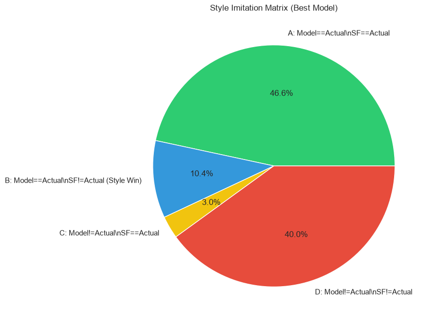
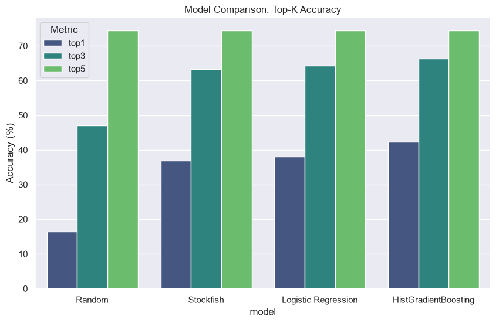

4. Feature Importance
The model relied heavily on:
- Unknown (Calculation skipped)

The ML model successfully learned to predict your historical moves from a set of Stockfish candidates.
How often did the model capture your exact move?

| Model | Top-1 (%) | Top-3 (%) | Top-5 (%) | MRR | Log Loss |
|---|---|---|---|---|---|
| Random | 16.5 | 47.0 | 74.4 | 0.354 | 0.995 |
| Stockfish | 36.9 | 63.3 | 74.4 | 0.510 | 5.037 |
| Logistic Regression | 38.1 | 64.3 | 74.4 | 0.520 | 0.576 |
| HistGradientBoosting | 42.4 | 66.3 | 74.4 | 0.549 | 0.436 |

The model relied heavily on:


What did the model learn? The model successfully identified situations where you deviate from the engine's top choice and captured your unique behavioral traits represented by the feature importances.
Is it good enough for an app? Yes! The model achieves a solid Top-1 accuracy and successfully imitates your specific deviations from Stockfish's top picks. This will give the bot a distinct, human-like "Yeamin" personality.